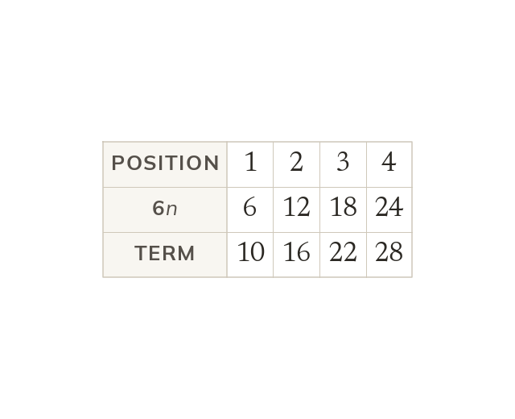

Where dn + c comes from
Every arithmetic sequence has a rule dn + c. Its terms sit c away from the multiples of d. So c is the first term minus d.
Every arithmetic sequence has a rule of the same shape, and knowing the shape is most of the work. Because the sequence changes by d at every step, its terms sit a fixed distance from the multiples of d - the sequence you would get if the rule were dn on its own. That fixed distance is c, and working back one step from the first term finds it, because position 0 is one step before position 1: c is the first term minus d.